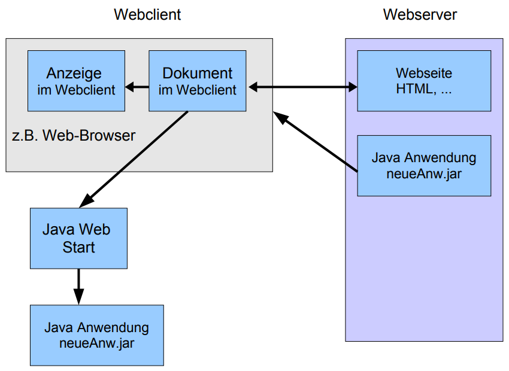
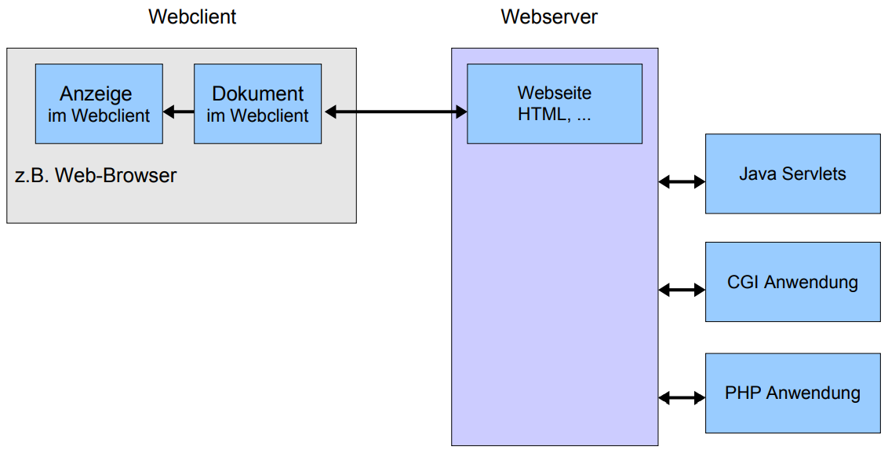

PORTFOLIO
Facts about: Webanwendungen
Deployment
Als erstes haben wir unterschiedliche Deployment Methoden und deren Vor- und Nachteile besprochen.
Installation
Weniger Gerätespeicher verfügbar, mögliche Nutzungsbeschänkungen, mehrere Betriebssysteme: mehrere Versionen
Web-Anwendung
Nur neueste Version muss geupdated werden aber gute Server nötig, unterschiedliche Darstellung in unterschiedlichen Browsern
Software Architektur von Webanwendungen
1. client-seitig
Der Webserver stellt nur die Webseiten in HTML, CSS und die Funktionalität als Download zur Verfügung.

2. server-seitig
Der Server übernimmt den Hauptteil der Rechenarbeit.

3. client und server-seitige Erweiterung
Ein Mix aus 1. und 2.: Der Webbrowser berechnet kleiner Anwendungen, für größere Berechnungen ist der Server zuständig.